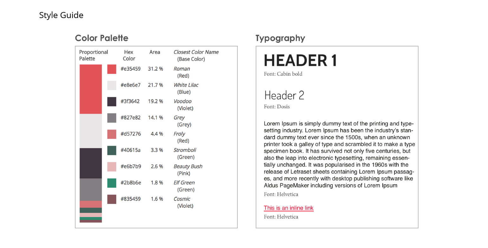
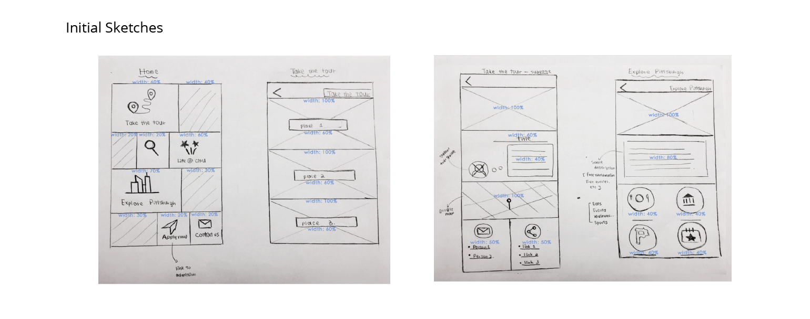
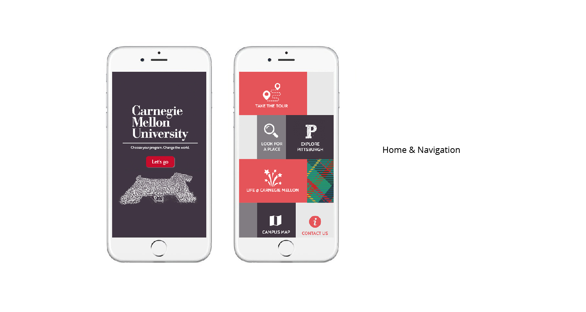
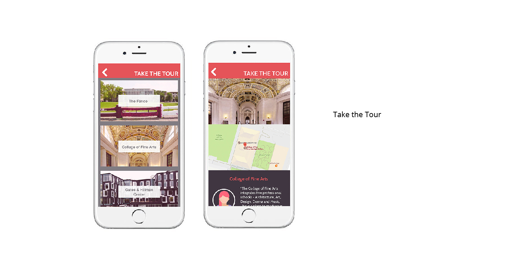
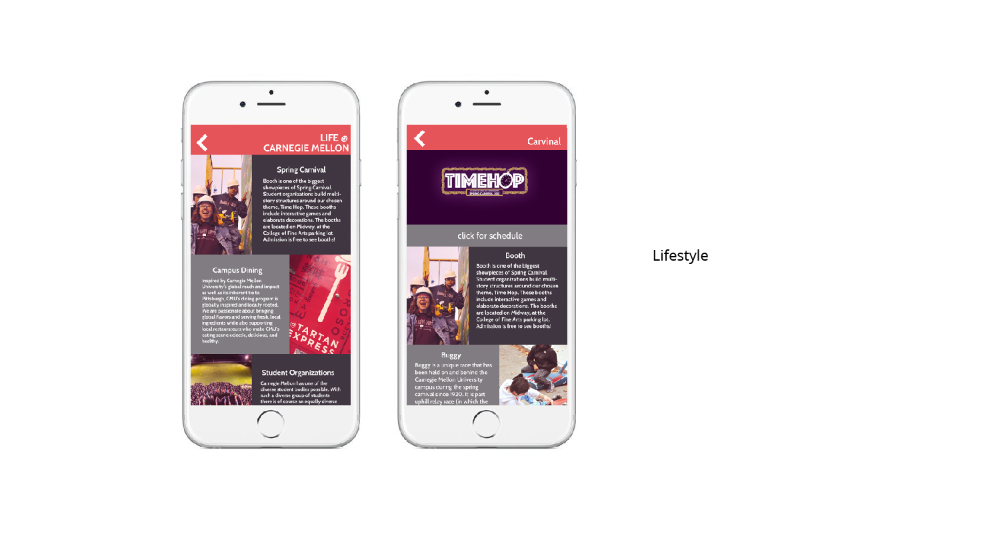
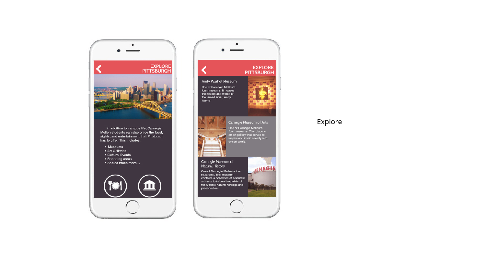

Skills: Visual Design, UI Design, User Research, Personas
Time Span: April - May 2018
Team: Rosie, Edward, Yan, Chris
Problem
By guiding visiting prospective students and families, Carnegie Mellon can provide a more realistic experience and more detailed knowledge in terms of the various curriculums of every major and campus life. However, the university lacks a mobile means of providing the satisfying tour the visitors need. Also, there are almost no reliable sources of information the visitors can carry as they walk around the school, thus leaving them clueless until after their visit is over.
While the school does provide websites, users not only are typically not mobile-friendly, but also found them disorderly and time-consuming. Therefore, the users are unable to collect all of the necessary information they need to make their decisions for college.
Opportunity & Scope
According to our research, the majority of users are seeking a tour guide as they explore the campus. Our team want to create Carnegie Mellon’s virtual tour app. Our app is made solely mobile-friendly. Due to the time and effort limitation, we decided to go with the minimum viable product that ensures the visitors will have a portable means proper guidance and sufficient knowledge of CMU on-the-go. In this case, a desktop version was deemed less necessary.
This will be especially important for people who prefer self-guided tours or are unable to have their questions properly answered. We hope meet the needs of various users, including admitted students, potential applicants, family, and the school faculty such as the counsellors.
Initial Research
Comparative Analysis
Nowadays, most of schools adapt outside servers for their virtual tours, such as youvisit.com, as a part to include in their main site. These websites/apps are interactive maps similar to those virtual tours in museums, with descriptions of each location to help guide the visitors.
- The advantage of these interactive maps is that they most resemble the actual tour on campus, some of them even have a virtual tour guide, pop-up messages, animations to add interactivity to the user’s experience. Also, they are mobile-friendly as the layout of the site would adjust to different screen sizes. The responsive design makes it easy for users on-the-go.
- However, these websites lack of originality since all schools would use the same server, so it’s difficult to highlight what is unique to the school itself, and the cultures and school spirit associated with it. Most tours don’t emphasize on individual experience of students. Few tours actually include information of student life, such as dining, housing, clubs, etc.
Key Takeaways
Our apps aims to put more emphasis on the student life and the school spirit of Carnegie Mellon. Through the app, we want to provide an enriched student experience of what the life at CMU looks like. The excellent academics at CMU is well-known. Students who are interested in attending CMU are mostly curious of the student activities, organizations, etc, which make CMU stand out from other prestigious institutions.
We also want to provide sufficient information for a virtual campus tour for the visitors in an engaging manner. Plain text descriptions and slide shows of pictures can be rather boring, so we want to bring interactivity to the website.
Design Process
UI
When designing the mobile interface, we tried to align the color theme and style with the Carnegie Mellon branding, so that the app effectively targets at the main user group (prospective students and parents who come to visit).
One focus of our design is that besides the basic navigation functions, it has sections dedicated to the student experience unique to Carnegie Mellon. We introduce extracurricular activities, clubs, and life in Pittsburgh from the real student’s experience.


Continuous Testing
During the process of designing and implementing the mobile app for Carnegie Mellon virtual campus tour, our four team members have conducted 4 cycles of user testing, with interviews with more than twenty users. These include prospective students, admitted (current) students studying at Carnegie Mellon, the client (the staff at the Admission Office), as well as parents. Our sample users span the full range of age groups. Because the goals of these users in using our app are distinct from each other, the user testing reports in each cycle help us find problems in our implementation and refine our product.
- In the first round, we wanted to see how the functionality and design of our application works for the users. For the most part, our testers had very few issues with navigating the menu and the different sections of the tour. Design wise, the testers understood a majority of the icons and sections. However, the color was deemed too feminine for the school’s theme, so the color palette was modified to be more gender-neutral.
- For round two, we began adding subcategories to add more information about the school. A tester commented that having a search bar to search for unlisted places would be helpful as well. Generally, there were some suggestions for using the breadcrumb method to return to the menu and adding different kinds of information for majors.
- In the final round, we added the last of our needed subsections and made small tweaks to the design to meet with client and students again. The users also emphasized the importance of experience of student experience and campus traditions for prospective students. There seems to be high value placed on student life when choosing college. Taking their suggestions, we added more content to the life at CMU section.
Project Outcome
Our virtual campus tour site includes more than twenty individual pages in the web site. These are divided into five sections: “Take the Tour”, “Life at Carnegie Mellon”, “Explore Pittsburgh”, “Contact Us”, and “Campus Map”. We have designed a mobile app to reflect the unique student experience at Carnegie Mellon. Acting as a tour guide for visitors, our app introduces Carnegie Mellon lifestyle by including the campus tour of signature places, a glimpse at the city of Pittsburgh, as well as a special section dedicated to campus traditions and student life. We have also added slideshows, Google APIs, etc, to enhance the interactivity of the site.
Our website is targeted as mobile, and is responsive so that it fits different devices. It would be available on both the android and IOS platform for users to download.




Next Step
For future development, we consider recruiting students as representatives of the app, and then adding the live-chat functionality to our current product. This would enable communication between current students and visitors, which is similar to a face-to-face dialogues in real life.